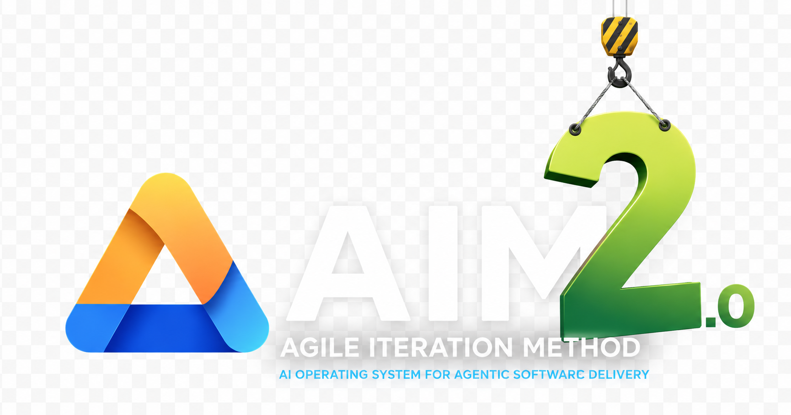

Build what you want
Start from an outcome, not a pile of disconnected coding tasks.
New in AIM 2.6 · First-class AIM UI
Watch Epics, Increments, roles, gates, evidence, decisions, and helper agents move through one living delivery board — while AIM keeps authority in the chat.
npx skills add joneri/agile-iteration-method --skill agile-iteration-method
A delivery system, not a coding assistant
AIM gives AI work a destination, a controlled next step, evidence before acceptance, and a human decision when it matters.
Start from an outcome, not a pile of disconnected coding tasks.
Keep the Epic, approved increment, evidence, and next decision visible.
Make review, validation, and correction part of delivery rather than cleanup.
People retain ownership of scope, trust decisions, releases, and completion.
One repeatable delivery loop
AIM separates responsibilities so planning does not silently become implementation and generated work does not silently become accepted work.
Define the Epic, value, boundaries, and acceptance intent.
Choose one useful, reviewable slice of the outcome.
Implement the approved increment end to end.
Find correctness issues, edge cases, and risk.
Check evidence against the increment and Epic.
Accept, adjust, continue, or close the Epic.
AIM does not promise that AI is always correct. It creates repeated opportunities to discover mistakes before they are accepted, and sends failed work back for correction.
Built for real repositories
AIM learns enough to work safely, remembers useful repository knowledge, and expands context only when the task, evidence, or risk requires it.
Technologies, commands, important folders, conventions, risks, and relevant documentation.
Shared repository facts and personal hints persist without becoming one giant active prompt.
Start from compact state and load deeper operational truth only when it becomes relevant.
Blocking review findings and failed validation prevent silent completion.
AIM communicates the intended current meaning directly. Private conversations, rejected drafts, AI mistakes, prompts, and review feedback stay out of product copy, UI labels, code comments, and documentation unless history is the artifact's actual purpose.
AIM UI · the delivery loop made visible
AIM UI brings multiple Epics and their Increments onto one live Kanban. Follow the canonical role, Gate, evidence, decisions, and spawned helper agents on every card — then watch real runtime changes become calm, meaningful movement.
Every Increment keeps a clear Epic identity while several independently authoritative workspaces share one board.
Quiet polling leaves cards still. A genuine state transition moves only the affected ticket between workflow stations.
Decision controls appear only when AIM finishes its handoff, then open a bounded, freshness-checked intent in Codex.
The browser cannot pass Gates or write runtime state. Human ownership and AIM's canonical role loop stay intact.
Introduced in AIM 2.3
AIM Reflect goes beyond memory cleanup for repository work. It finds lessons in completed delivery, verifies them against current evidence, preserves provenance and contradictions, and asks you before anything becomes durable knowledge.
This comparison uses Anthropic's public description of Dreams; Reflect is AIM's repository-delivery answer, not a claim to replace every memory system.
/aim reflectTurn completed AIM history into temporary, evidence-backed knowledge candidates for the repository you are working in.
/aim reflect-allPreview selected local AIM projects, then find project, cross-project, personal, and AIM-product insights without modifying any source repository.
Repository paths, current-source verification, confidence, contradictions, destination, and promotion action travel with every candidate.
Reports stay temporary under .aim/analysis/. Profiles, docs, code, and other repositories remain unchanged until you approve a separate promotion.

Rebuilt for AIM 2
AIM 2 was rebuilt while preserving the proven delivery loop. Workflow, repo awareness, runtime state, installation, and platform adapters now have clearer boundaries.
One product, adapted to each project
AIM keeps one delivery method while configuring native PO, TDO, Dev, and Reviewer specialists for the suppliers and technologies your project actually uses.
Every adapter preserves the same role order, gates, runtime state, and acceptance contract.
Consistent where consistency mattersEach supplier uses its own project-agent format, tuned from one readable role profile.
Specific where specificity helpsSharing, repository writes, permissions, models, and tools remain explicit project or organization choices.
Safe without separate editionsNative where you already work
Each platform gets a natural entrypoint. The delivery loop, quality rules, ownership, and acceptance stay shared.
Use the AIM skill under ~/.agents/skills/ for the complete /aim command family, plus project custom agents under .codex/agents/.
/aim start "EPIC: ..."
Use the project AIM skill under .claude/skills/aim/, with project subagents under .claude/agents/.
/aim start "EPIC: ..."
Use the project AIM skill under .github/skills/aim/, backed by repository custom agents under .github/agents/.
/aim start "EPIC: ..."
Your first AIM journey
Install the complete portable Agent Skill through the standard skills CLI, or use the adaptive installer for repository-aware setup and native project specialists. Both paths deliver full AIM.
Use the common skills CLI for a self-contained AIM package that works without the source repository. It is generated from canonical AIM sources, preserves every role and gate, and is full AIM rather than AIM Lite.
npx skills add joneri/agile-iteration-method --skill agile-iteration-method
Run the packaged upgrade path before starting or resuming work. It refreshes installed AIM surfaces while preserving active runtime state.
/aim upgrade
Select Codex, Claude, GitHub Copilot, or any combination. AIM installs each native skill, its project specialists, and only the shared contracts they need.
AIM detects conservative stack and validation facts and writes them to a readable aim.roles.yaml profile.
Review native role files, edit them directly, or ask AIM to refresh them when the stack or test strategy changes.
Existing customizations remain collision-protected.Start by upgrading existing AIM files when needed, calibrating repository awareness, and remembering important product context that should guide future work.
Choose the repository and the adapters you use.
Verify the smallest useful repository understanding.
Describe the outcome you want, not a task pile.
Confirm direction, boundaries, risks, and acceptance.
Work through one useful Done Increment at a time.
Review what changed, what passed, and what remains.
Choose this path when you also want repository inspection, adapter selection, an initial role profile, and native project specialists. Clone the public source, inspect it locally, and begin with a no-write preview.
git clone --depth 1 https://github.com/joneri/agile-iteration-method.git aim-source
Go deeper when you need to